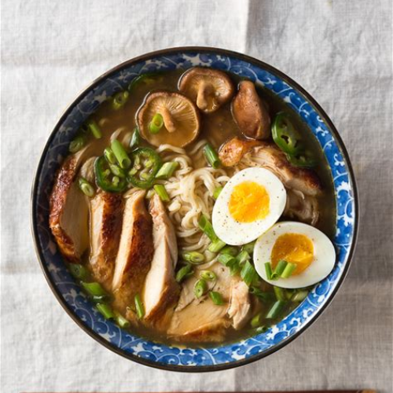

About
Upload
Search
Ramen

Recipe from Matthew C. Paraiso
Ingredients
Ingredient
Measurement
Broth (Chicken, Pork, Vegetable)
2 cups
Ramen Noodles
1 pack
Soft-Boiled Egg
1
Pork Belly
2-3 slices
Soy Sauce
2 tbsp
Sesame Oil
1 tbsp
Green Onions (Sliced)
1-2
Optional: Nori, Corn, Bean Sprouts
As much as you desire
Instructions
Prepare the broth: Heat your broth in a pot, adding soy sauce and sesame oil for flavor.
Cook the noodles: Boil the ramen noodles according to package instructions, then drain and set aside.
Assemble the ramen: Place the noodles in a bowl and pour the hot broth over them.
Add toppings: Add slices of chashu, a soft-boiled egg, and any other toppings you desire.
Garnish: Sprinkle with sliced green onions for added freshness.
Serve: Enjoy your flavorful bowl of ramen!